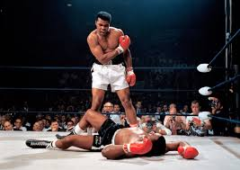

In boxing (and other sports), one becomes the champ by beating the champ. And they remain the champ until someone takes it from them.
What if college football did this? On November 6, 1869 Rutgers defeated Princeton 6-4 (in a game that more closely resembled soccer than
what we’d call football, but we’re counting it anyway), winning the first College Football Heavyweight Bout. Princeton would win the
rematch 8-0 to take back the Belt. Since then, I’ve tracked the progress of the Belt and all the challenges for it. The 314th (and current)
Heavyweight Champion of College Football is Texas.
| School | Texas |
| Number of Reigns | 5 |
| National Titles | 3 – (1963, 1998, 2005) |
| Record in Bouts | 20-16-0 |
| As Belt Holder | 15-4-0 |
| As Challenger | 5-12-0 |
***Current Reign***
3 games
- Sep 7, 2024 Texas 31:12 Michigan
- Sep 14, 2024 UTSA 7:56 Texas
- Sep 21, 2024 Texas 51:3 Louisiana-Monroe
Previous Reigns:
Reign #4
- Oct 25, 2008 Texas 28:24 Oklahoma State
- Nov 1, 2008 Texas Tech 39:33 Texas
Reign #3
- Jan 4, 2006 Texas 41:38 USC
- Sep 2, 2006 North Texas 7:56 Texas
- Sep 9, 2006 Texas 7:24 Ohio State
Reign #2
- Nov 27, 1998 Texas 26:24 Texas A&M
- Jan 1, 1999 Texas 38:11 Mississippi State
- Aug 28, 1999 NC State 23:20 Texas
Reign #1
- Oct 12, 1963 Oklahoma 7:28 Texas
- Oct 19, 1963 Texas 17:13 Arkansas
- Oct 26, 1963 Rice 6:10 Texas
- Nov 2, 1963 Texas 17:12 SMU
- Nov 9, 1963 Texas 7:0 Baylor
- Nov 16, 1963 Texas 17:0 TCU
- Nov 28, 1963 Texas 15:13 Texas A&M
- Jan 1, 1964 Navy 6:28 Texas
- Sep 19, 1964 Texas 31:0 Tulane
- Sep 26, 1964 Texas 23:0 Texas Tech
- Oct 3, 1964 Army 6:17 Texas
- Oct 10, 1964 Oklahoma 7:28 Texas
- Oct 17, 1964 Arkansas 14:13 Texas
Challenges:
Texas has challenged 17 times, winning 5:
- Oct 9, 1954 Texas 7:14 Oklahoma
- Oct 8, 1955 Oklahoma 20:0 Texas
- Oct 13, 1956 Oklahoma 45:0 Texas
- Oct 12, 1957 Texas 7:21 Oklahoma
- Jan 1, 1960 Syracuse 23:14 Texas
- Oct 12, 1963 Oklahoma 7:28 Texas
- Oct 16, 1965 Arkansas 27:24 Texas
- Nov 27, 1998 Texas 26:24 Texas A&M
- Jan 4, 2006 Texas 41:38 USC
- Oct 25, 2008 Texas 28:24 Oklahoma State
- Jan 7, 2010 Alabama 37:21 Texas
- Oct 6, 2012 West Virginia 48:45 Texas
- Nov 27, 2014 TCU 48:10 Texas
- Oct 3, 2015 Texas 7:50 TCU
- Dec 29, 2022 Washington 27:20 Texas
- Jan 1, 2024 Washington 37:31 Texas
- Sep 7, 2024 Texas 31:12 Michigan
Reports: